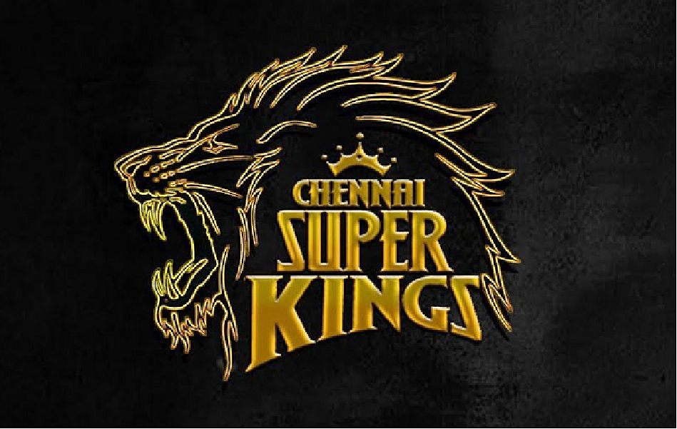

Perfect All rounder.
In domestic cricket, Bravo has played for his native Trinidad and Tobago since 2002. He has also played for the Chennai Super Kings in the Indian Premier League, the Melbourne Renegades in the Big Bash League, the Chittagong Kings in the Bangladesh Premier League, and Kent and Essex in English county cricket. In 2013, he was named as a franchise player at the launch of the Caribbean Premier League.

Captian Cool!!
Dhoni holds the post of Vice-President of India Cements Ltd., after resigning from Air India. India Cements is the owner of the IPL team Chennai Super Kings, and Dhoni has been its captain since the first IPL season.Dhoni is the co-owner of Indian Super League team Chennaiyin FC.
MR.Consistent
Suresh Raina is an Indian professional cricketer. A left-handed occasional middle-order batsman and an occasional off-spin bowler; he plays for Uttar Pradesh in all forms of domestic cricket and is the captain of Gujarat Lions in the Indian Premier League. He has also captained the Indian cricket team and is the second youngest player to captain India. He is one of two Indian batsmen to ever score a century in all three formats of international cricket.

Divided by Franchise! United by TEAM
Chennai Super Kings - Named out of one of four major metropolitian city of INDIA - CHENNAI (MADRAS). Previously it was Super star Rajnikanth the only icon to potray our Chennai to others. Now Dhoni and boys take the pleassure to showcase the pride of Chennai. This is the only Team to get into semi-finals in each and every season of IPL.